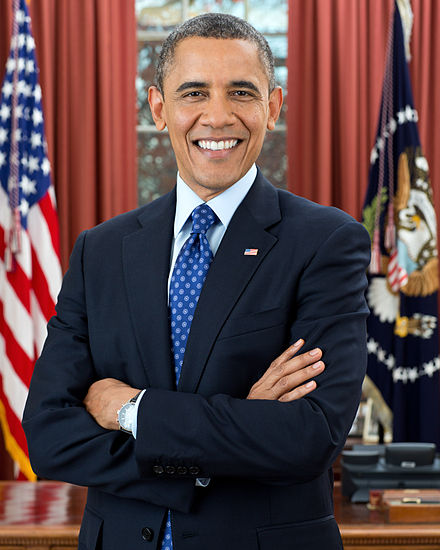
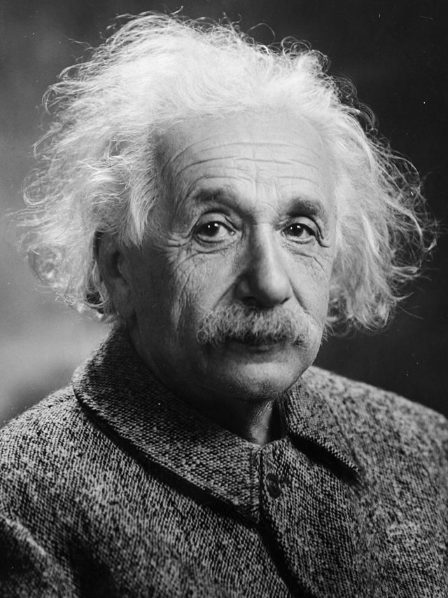

“An ounce of patience is worth more than a tonne of preaching.”-
|
|
“An ounce of patience is worth more than a tonne of preaching.”- |
|
Inspiration From World Leader |
|
|

In 2009, when Barack Obama was visiting Wakefield High School in the US, a ninth grader asked the would-be President:
“If you could have dinner with anyone, dead or alive, who would it be?” Obama chuckled and answered: “Well, dead or
alive, that’s a pretty big list. You know, I think that it might be Gandhi, who is a real hero of mine.”.
Nobel Peace Prize winner and prominent Burmese freedom fighter Aung San Suu Kyi,
while addressing students at Columbia University in New York in 2012, said Gandhi
had been one of the major influences in her life and she urged the students to read his works.
His Holiness the Dalai Lama, monk and exiled leader of the Tibetan people, has always said he is a follower of Mahatma Gandhi.
Both the leaders were representatives of the idea that political change must be secondary to spiritual evolution.
“I have the greatest admiration for Mahatma Gandhi. He was a great human being with a deep understanding of human nature.
His life has inspired me,” said the Dalai Lama.

Albert Einstein and Gandhi were big admirers of each other and exchanged letters frequently.
Einstein called Gandhi “a role model for the generations to come” in a letter, writing about him.
“I believe that Gandhi’s views were the most enlightened of all the political men in our time,” he said.
When Steve Jobs started his second innings at Apple in the year 1997, he stood before a giant portrait
of Mahatma Gandhi and said these words before a packed audience: “Here’s to the crazy ones. The misfits.
The rebels. The troublemakers…because the people who are crazy enough to think they can change the world, are the ones who do.” It is believed that Mahatma Gandhi inspired these words.
|
Home / Privacy Policy / Terms of Service / Feedback
Host By Bhoopendra Yadav
CBSE© / All Rights Reserved